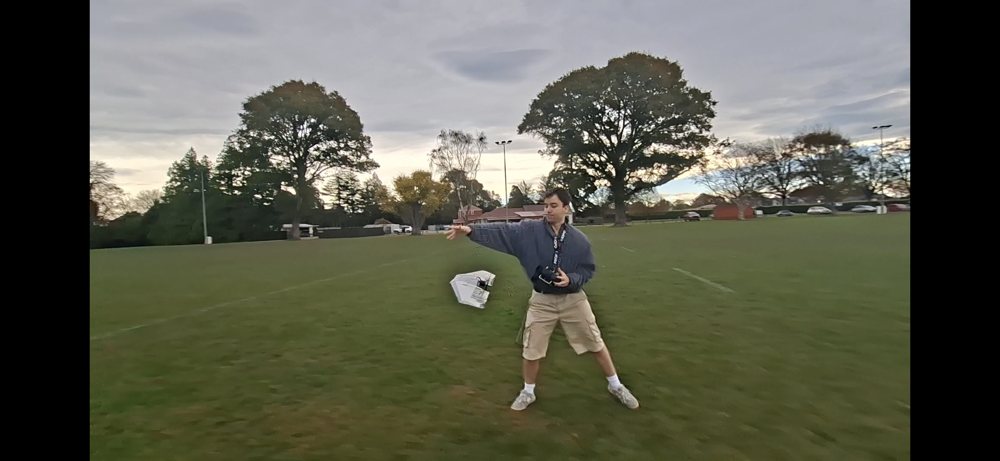
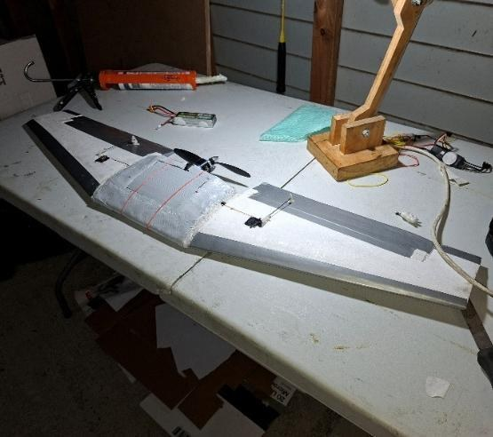
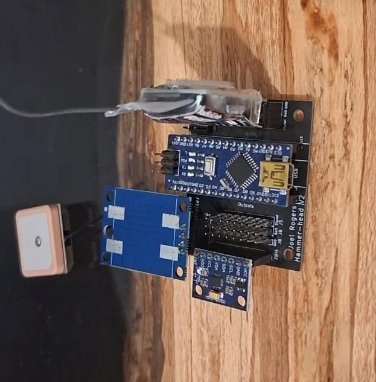
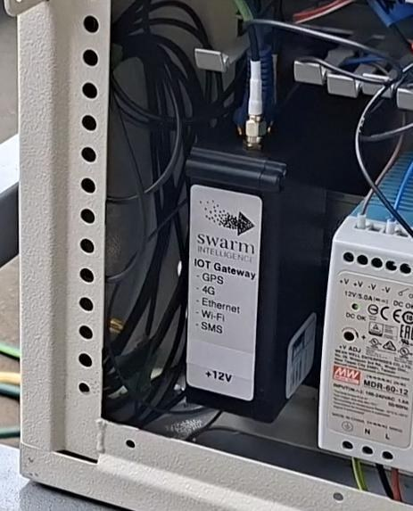
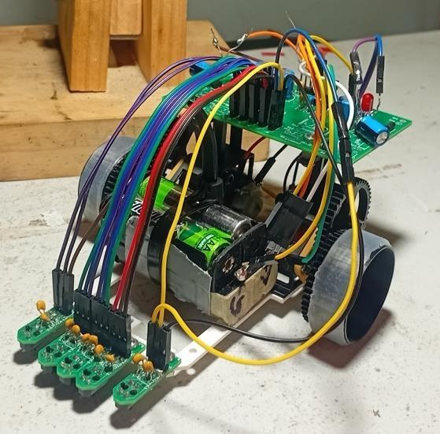
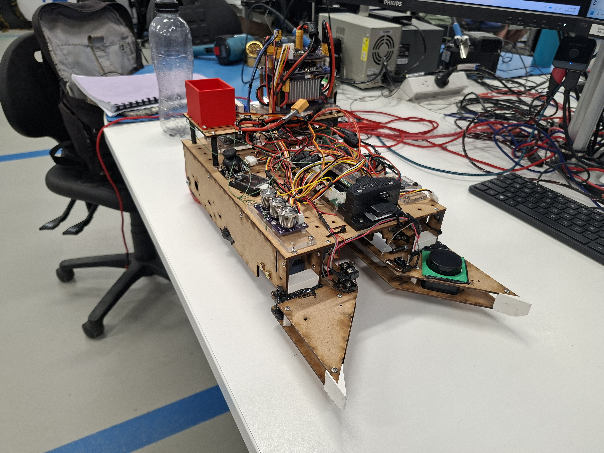
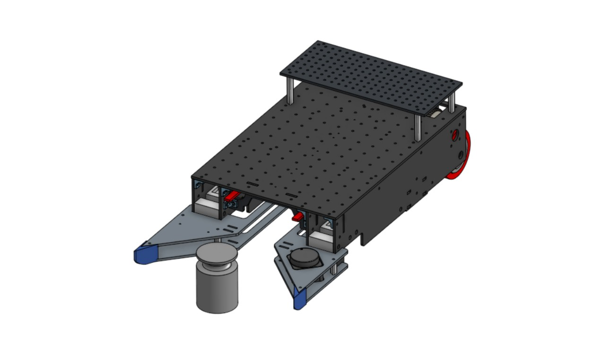
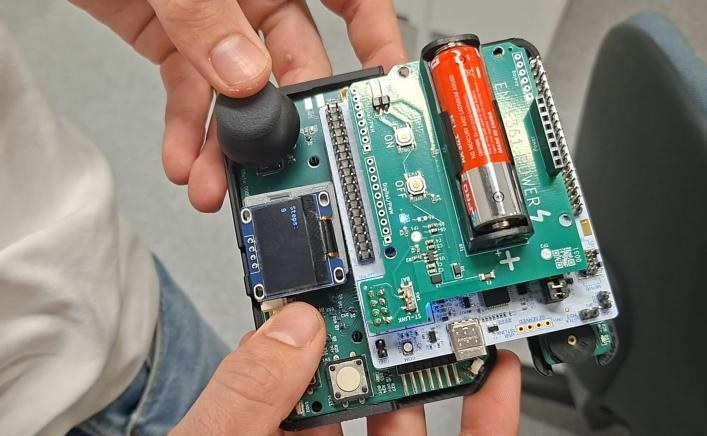

BE (Hons), University of Canterbury Expected graduation · 2027

FIELD NOTES / 01UAV V2 · Flight testing ↗
EMBEDDED SYSTEMSPCB DESIGNROBOTICSINDUSTRIAL AUTOMATIONUAV DEVELOPMENT
01 / SELECTED PROJECTS
From an idea to the real world.
Design, build, test, repeat. A selection of personal, university and industry engineering projects.

01 / Personal · Aerospace
Flying wings, built from first principles.
Two UAV platforms, from an iterative prototype to a custom composite airframe. Designed, manufactured and flight-tested with a purpose-built flight controller.
SolidWorks / KiCad / C++ / RF
Explore the build +
Modelled and tested the prototype and V2 flying wings, refining the design through flight testing.
Manufactured a lightweight fibreglass fuselage core and assembled a custom PCB integrating GPS, IMU and RF modules.
Programmed sensor and receiver inputs for fly-by-wire assistance and autonomous flight.


02 / Swarm Intelligence · Industrial IoT
From field telemetry to a working interface.
An ESP32 industrial monitor connecting physical equipment to GPS telemetry, a server, a database and a custom web interface.
ESP32 / 4G / Ethernet / JavaScript
Explore the build +
Integrated WiFi, 4G and Ethernet communications with GNSS tracking.
Developed C++ firmware, hardware integration and microcontroller PCB designs.
Built the server, database, data parsing and HTML interface.

03 / University · Robotics
A record run. 5.81 seconds.
A line-following robot that broke the University of Canterbury annual competition record, combining custom electronics with an iterated mechanical design.
PID / KiCad / ESP8266 / Arduino
Explore the build +
Designed and assembled the main microcontroller and photoelectric sensor PCBs.
Modelled, printed and tested gearing, motor mounts and chassis variations.
Integrated an ESP8266 to change PID values over WiFi.

04 / University · RoboCup
Simple mechanics. Reliable collection.
An autonomous robot designed to navigate an arena and identify and collect target objects, with a focus on a reliable weight pickup mechanism.
Onshape / Laser cutting / 3D printing
Explore the build +
Used first principles engineering to design and iterate the weight collection mechanism.
Combined an MDF chassis, laser-cut parts and 3D-printed components.
Used Onshape modelling and version control to refine and revisit designs.


05 / University · Embedded software
STM32 step counter
Interrupt-driven firmware reads IMU data and uses threshold-based counting to detect walking steps, bringing sensor input and embedded software together in a working device.
STM32 / Embedded C / IMU / Git
Explore the build +
Programmed the step-counting system in STM32CubeIDE using interrupt-driven software.
Read IMU data and implemented threshold-based step detection.
Used Git for version control throughout firmware development.
02 / INDUSTRY EXPERIENCE
Engineering beyond the workbench.
Practical electronics and automation experience at Swarm Intelligence.
MAR — AUG 2026
Christchurch, NZ
Electronics / Mechatronics Engineer
Swarm Intelligence
Programmed and commissioned automated manufacturing systems, including projects with Christchurch Engine Centre (Pratt & Whitney) and Fulton Hogan.
Developed an ESP32 industrial monitor, from C++ firmware and hardware integration to a server, database and web interface.
Designed microcontroller PCBs for real-world mobile systems.
OCT 2025 — MAR 2026
Christchurch, NZ
Electronics Engineering Intern
Swarm Intelligence
Assembled over 30 surface-mount and through-hole PCBs, then validated operation and debugged faults before delivery.
Designed HMIs for Engine Centre technicians and industrial monitoring clients.
Installed and commissioned hardware on site, working with high-voltage power electronics, pumps and pressure vessels.
03 / ABOUT & CAPABILITIES
Curious by nature. Hands-on by choice.
I enjoy the point where a design becomes something you can hold, test and improve.
My interests centre on aerospace, embedded systems and robotics. At Swarm Intelligence, I worked alongside technicians and engineers to bring automation projects into service. In my own builds, I carry that same practical approach from CAD and circuits through to firmware and testing.
I'm studying towards a Bachelor of Engineering (Honours) in Mechatronics at the University of Canterbury, with graduation expected in 2027.
Outside engineering +
Tiler at Syrus Imperial Tiles (Dec 2023–Nov 2025); bartender at The Commodore Hotel (Nov 2022–Feb 2025); hockey coach at St Andrew’s College (Apr 2023–Aug 2025); and representative hockey coach at Canterbury Hockey (Aug–Sep 2025).
Workplace First Aider certification valid until February 2028.
Software & firmware
C · C++ · C# · Python · Arduino JavaScript · HTML · Git